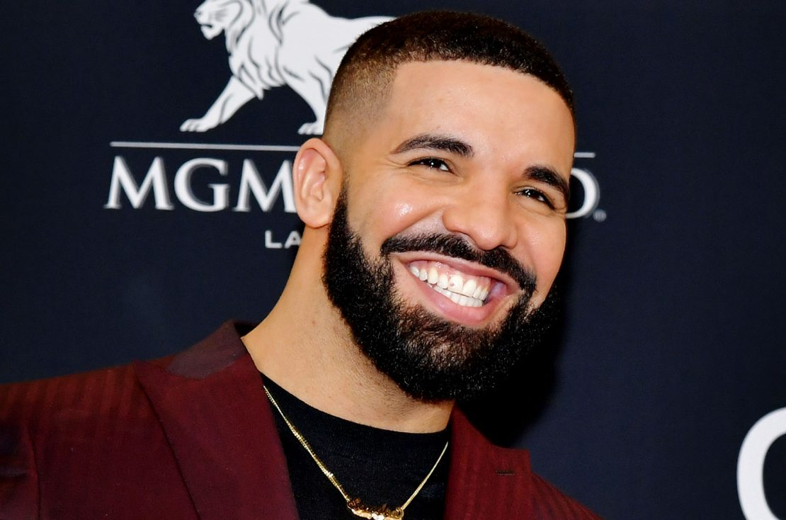

Taylor Alison Swift (Reading, 13 de dezembro de 1989) é uma cantora, compositora, atriz, diretora e roteirista norte-americana. Construiu uma fortuna bilionária antes dos 35 anos trabalhando como cantora e suas composições narrativas, muitas vezes inspiradas pela as suas experiências pessoais, têm recebido ampla cobertura midiática e elogios de críticos.
Swift mudou-se para Nashville aos 14 anos de idade para se tornar uma cantora de música country, assinando um contrato de composição com a Sony/ATV Music Publishing em 2004 e um contrato de gravação com a Big Machine Records em 2005 e com a Republic Records em 2019.
Roberto Carlos Braga (Cachoeiro de Itapemirim, 19 de abril de 1941)[1] é um cantor, compositor e empresário brasileiro. Foi considerado pela revista Rolling Stone Brasil como o 6.º maior artista da história da música brasileira.[2]Conhecido no Brasil e na América Latina como "Rei", Roberto Carlos começou a sua carreira no início da década de 1960 sob influência do samba-canção e da bossa nova. Com composições próprias, geralmente feitas em parceria com o amigo Erasmo Carlos, fundou as bases para o primeiro movimento de rock feito no Brasil. Com a fama, estrelou ao lado de Erasmo e Wanderléa um programa na RecordTV chamado Jovem Guarda, que daria nome ao primeiro movimento musical do rock brasileiro, e que os alçou Roberto ao status de ídolos da geração. Além da carreira musical, estrelou filmes inspirados na fórmula lançada pelos Beatles - como Roberto Carlos em Ritmo de Aventura (1968), Roberto Carlos e o Diamante Cor-de-rosa (1970) e Roberto Carlos a 300 Quilômetros por Hora (1971).[3]
Mais sobre o Roberto Carlos Aubrey Drake Graham (Toronto, 24 de outubro de 1986)[5] é um rapper, cantor, compositor, produtor musical, ator e empresário canadense. Drake inicialmente ganhou reconhecimento como ator na série de televisão de drama adolescente Degrassi: The Next Generation, no início dos anos 2000. Atualmente está trabalhando com as gravadoras Young Money Entertainment, Universal Motown e OVO Sound,[6][7] sendo que o próprio Drake fundou a terceira. Ele também é um torcedor fanático do time de basquete da NBA, o Toronto Raptors.
Mais sobre o Drake